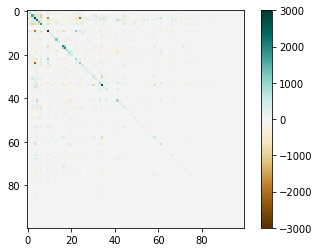
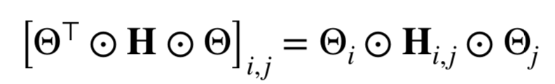
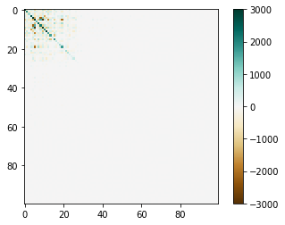

Neural networks can represent functions to solve complex tasks that are difficult if not impossible to write instructions for, such as understanding language and recognizing objects. Conveniently, task performance scales linearly with the number of parameters in the network. However, computation costs for parameter sizes also explode in dollars and latency. Practitioners are plagued with networks being too large to store onto memory chips or too slow for real-world use cases.
Progress made in network sparsification has presented post-hoc (after training) methods that allow us to remove parameters in a neural network and then fine tune the leftover parameters to achieve a similar task performance. The trade off here is that it makes the process of training more complex requiring surgical procedures for the networks and task performance decreases. Optimistically, this does suggest that neural networks can still represent interesting functions without all of its parameters. And with smaller parameter sizes, we can tame the exploding costs of computing neural networks. Unfortunately, for many real world use cases task performance is a non-negotiable cost.
The Lottery Ticket Hypothesis presents the idea that every function can be represented by a “winning ticket” subnetwork and a larger parameter size simply gives us more lottery tickets. The authors showed that they were able to recover the winning ticket using a weight magnitude based analysis. A winning ticket retrained with its weights reset to its initialized value achieves task performance competitive with the full network. This idea suggests that if we can sparsify a network by removing only unimportant weights, we can achieve a smaller parameter size without a task performance cost.
To take advantage of the ideas we've learned so far, we have to understand the importance of weights. We can study the coadaptation matrix of the neural network's parameters after its done training.  Position (i, j) of the matrix represents the dependence of parameter i on parameter j. Pruning a set of weights {l, m, n} will change the loss proportional to the sum of the l, m, and nth columns. The weights are ordered by the decreasing magnitude from left to right. As we can see from this matrix, the neural network still has some dependence on low magnitude weights, which suggests that sparisfying based on weight magnitude is not enough.
This leads to Targeted Dropout, our approach for creating the winning ticket and controlling its size. At every forward pass during training, we apply stochastic dropout to some “targeted portion” of the network, which are the least important parameters (losing tickets), based on some approximation of importance (i.e. weight magnitude, unit norm). After training, we can remove the least important parameters because the network is no longer dependent the targeted portion, due to stochastic dropout. Finally, we are left with a network containing only the winning ticket.  Let's study the coadaptation matrix of a network after its trained with targeted dropout. In this case, we set the targeted portion to be 75%, because we hope to use only 25% of the parameters after training. It is clear that all the high magnitude weights are only dependent on one another. Since this is the case, we can safely remove 75% of the least important parameters without removing any dependence amongst weights.
Empirically we saw that our technique is generally applicable to different architectures (ResNet32, VGG, Transformer) solving different task domains (translation, image classification). Networks trained with TD were extremely robust to post-hoc pruning. With an additional adaptation of gradually increasing the target portion during training, we can achieve up to 99.95% sparsity while only losing around 3-4% in task performance. More results and parameters can be reviewed in the Experiments section of our paper.